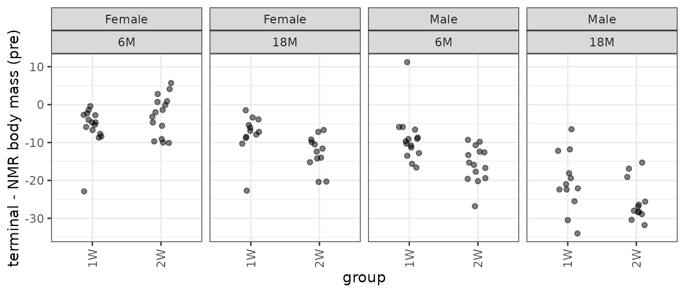
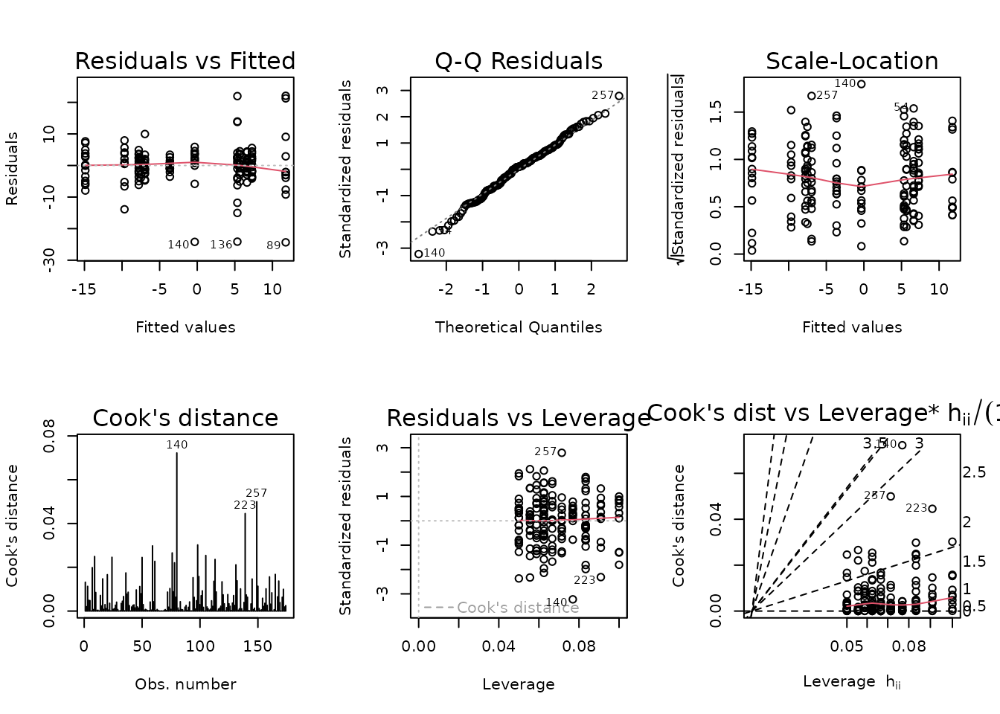
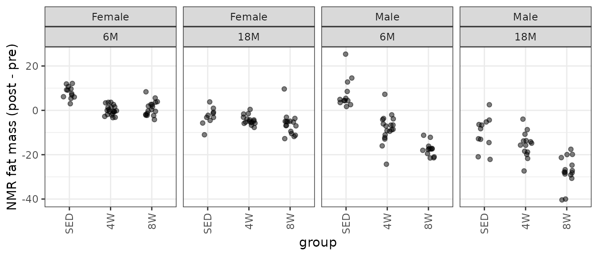
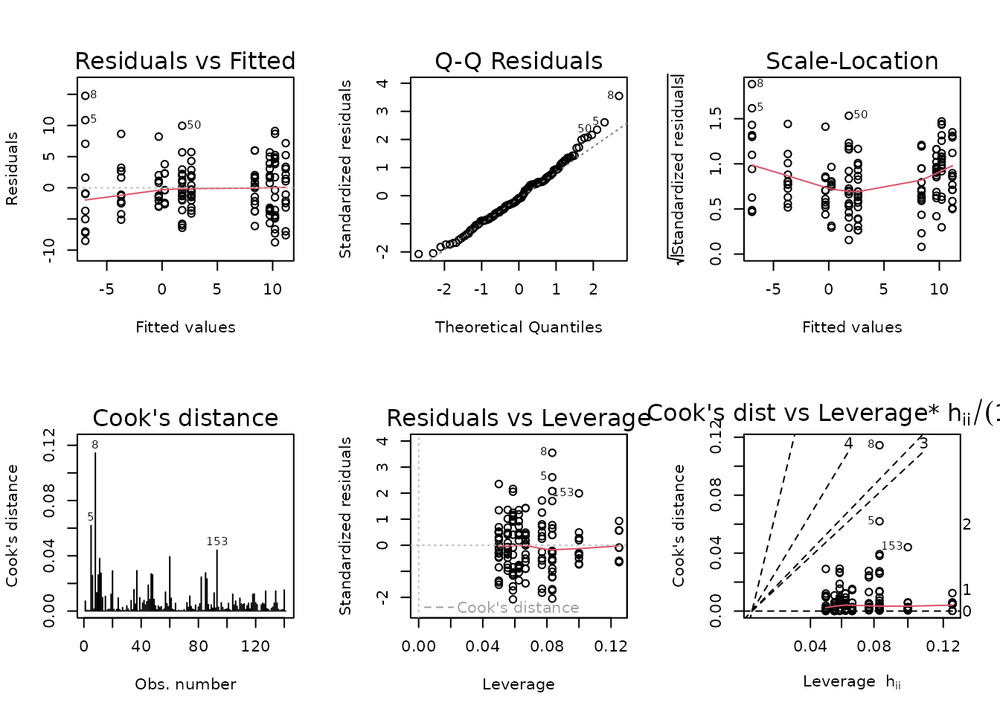

Statistical analyses of post- vs. pre-training body composition and VO2max testing measures
Tyler Sagendorf
01 May, 2024
Source:vignettes/PRE_POST_STATS.Rmd
PRE_POST_STATS.Rmd
# Required packages
library(MotrpacRatTrainingPhysiologyData)
library(ggplot2)
library(MASS)
library(dplyr)
library(emmeans)
library(tibble)
library(tidyr)
library(purrr)
library(latex2exp)
library(rstatix)
theme_set(theme_bw()) # base plot themeRegression Models
We will fit linear regression models with age, sex, group, and their interactions as predictors of the differences between post- and pre-training values for different measures of body mass, body composition, and VO\(_2\)max. If heteroscedasticity is observed, we will include reciprocal group variances as weights. Certain observations may be removed if their inclusion substantially affects the model fit. Model parsimony will be achieved through ANOVA F-tests.
NMR Body Mass
Body mass recorded on the same day as the NMR body composition measures.
# Plot points
NMR %>%
filter(!is.na(post_body_mass)) %>%
droplevels.data.frame() %>%
ggplot(aes(x = group, y = post_body_mass - pre_body_mass)) +
geom_point(position = position_jitter(width = 0.15, height = 0),
na.rm = TRUE, alpha = 0.5) +
facet_wrap(~ sex + age, nrow = 1) +
labs(y = "NMR total body mass (post - pre)") +
theme(axis.text.x = element_text(angle = 90, hjust = 1, vjust = 0.5))
There is one negative outlying value in the 6M SED male group that may affect the model fit. We will start with a WLS model, since we observe different group variances.
wt.body_mass <- NMR %>%
group_by(age, sex, group) %>%
mutate(1 / var(post_body_mass - pre_body_mass, na.rm = TRUE)) %>%
pull(-1)
fit.body_mass <- lm(I(post_body_mass - pre_body_mass) ~ age * sex * group,
weights = wt.body_mass,
data = NMR)
plot_lm(fit.body_mass)
The diagnostic plots appear fine.
anova(fit.body_mass, test = "F")
#> Analysis of Variance Table
#>
#> Response: I(post_body_mass - pre_body_mass)
#> Df Sum Sq Mean Sq F value Pr(>F)
#> age 1 227.94 227.94 227.9378 < 2.2e-16 ***
#> sex 1 490.51 490.51 490.5147 < 2.2e-16 ***
#> group 2 63.78 31.89 31.8906 2.099e-12 ***
#> age:sex 1 12.36 12.36 12.3552 0.0005704 ***
#> age:group 2 16.10 8.05 8.0491 0.0004648 ***
#> sex:group 2 53.63 26.81 26.8147 8.717e-11 ***
#> age:sex:group 2 2.76 1.38 1.3816 0.2541112
#> Residuals 162 162.00 1.00
#> ---
#> Signif. codes: 0 '***' 0.001 '**' 0.01 '*' 0.05 '.' 0.1 ' ' 11W, 2W: Terminal - Pre NMR Body Mass
Pre: body mass recorded on the same day as the NMR body composition measures in the 1W and 2W groups. Post: body mass recorded upon death (terminal body mass).
term_nmr_df <- BODY_MASSES %>%
filter(group %in% c("1W", "2W")) %>%
select(pid, iowa_id, age, sex, group, term_body_mass, nmr_pre_body_mass) %>%
mutate(diff = term_body_mass - nmr_pre_body_mass) %>%
na.omit()
# Plot points
p_term <- ggplot(term_nmr_df, aes(x = group, y = diff)) +
geom_point(position = position_jitter(width = 0.15, height = 0),
alpha = 0.5) +
facet_grid(~ sex + age) +
labs(y = "terminal - NMR body mass (pre)") +
theme(axis.text.x = element_text(angle = 90, hjust = 1, vjust = 0.5))
p_term
There is an extreme observation in both 6M Male groups.
ggplot(term_nmr_df, aes(x = nmr_pre_body_mass, y = term_body_mass)) +
geom_point(na.rm = TRUE, alpha = 0.5) +
stat_smooth(method = "lm", formula = y ~ x, se = FALSE, na.rm = TRUE)We see the outlier in the 6M 2W male group is an outlier in the scatterplot. We will plot the data without that observation.
# Remove those two points and update the plot
p_term$data <- filter(term_nmr_df, diff > -50)
p_term
Nearly every group has at least one outlying sample, and the groups have different variances. We will remove that extremely negative outlier and fit a WLS model.
out.term_nmr <- which(term_nmr_df$diff < -50) # 58
wt.term_nmr <- term_nmr_df %>%
mutate(term_body_mass = ifelse(1:n() %in% out.term_nmr,
NA, term_body_mass)) %>%
group_by(age, sex, group) %>%
mutate(1 / var(term_body_mass - nmr_pre_body_mass, na.rm = TRUE)) %>%
pull(-1)
fit.term_nmr <- lm(I(term_body_mass - nmr_pre_body_mass) ~ age * sex * group,
weights = wt.term_nmr,
subset = -out.term_nmr,
data = term_nmr_df)
plot_lm(fit.term_nmr)The diagnostic plots look mostly fine.
anova(fit.term_nmr, test = "F")
#> Analysis of Variance Table
#>
#> Response: I(term_body_mass - nmr_pre_body_mass)
#> Df Sum Sq Mean Sq F value Pr(>F)
#> age 1 45.106 45.106 45.1065 1.19e-09 ***
#> sex 1 102.394 102.394 102.3936 < 2.2e-16 ***
#> group 1 7.376 7.376 7.3757 0.007803 **
#> age:sex 1 4.468 4.468 4.4676 0.037056 *
#> age:group 1 2.730 2.730 2.7302 0.101634
#> sex:group 1 7.001 7.001 7.0007 0.009479 **
#> age:sex:group 1 4.830 4.830 4.8301 0.030298 *
#> Residuals 99 99.000 1.000
#> ---
#> Signif. codes: 0 '***' 0.001 '**' 0.01 '*' 0.05 '.' 0.1 ' ' 1NMR Lean Mass
Lean mass (g) recorded via NMR.
# Plot points
NMR %>%
filter(!is.na(post_lean)) %>%
droplevels.data.frame() %>%
ggplot(aes(x = group, y = post_lean - pre_lean)) +
geom_point(position = position_jitter(width = 0.15, height = 0),
na.rm = TRUE, alpha = 0.5) +
facet_wrap(~ sex + age, nrow = 1) +
labs(y = "NMR lean mass (post - pre)") +
theme(axis.text.x = element_text(angle = 90, hjust = 1, vjust = 0.5))
We observe several outlying values in several of the 6M male groups.
Observations 80, 89, and 140 are outlying, and greatly impact group variances. We will try inverse group variance weights.
NMR[c(80, 89, 140), ] %>%
select(pid, iowa_id, age, sex, group, pre_lean, post_lean) %>%
mutate(diff = post_lean - pre_lean)
#> pid iowa_id age sex group pre_lean post_lean diff
#> 80 10023259 06M8T1 6M Male SED 188.9168 222.7589 33.8421
#> 89 10027327 06M8T25 6M Male SED 207.9840 195.4080 -12.5760
#> 140 10024735 06M8T3 6M Male 8W 188.7944 164.2659 -24.5285
wt.lean <- NMR %>%
group_by(age, sex, group) %>%
mutate(1 / var(post_lean - pre_lean, na.rm = TRUE)) %>%
pull(-1)
fit.lean <- update(fit.lean, weights = wt.lean)
plot_lm(fit.lean)
The diagnostic plots seem mostly fine.
anova(fit.lean, test = "F")
#> Analysis of Variance Table
#>
#> Response: I(post_lean - pre_lean)
#> Df Sum Sq Mean Sq F value Pr(>F)
#> age 1 667.80 667.80 667.7986 < 2.2e-16 ***
#> sex 1 38.21 38.21 38.2125 4.960e-09 ***
#> group 2 31.51 15.76 15.7556 5.591e-07 ***
#> age:sex 1 1.47 1.47 1.4655 0.22782
#> age:group 2 20.93 10.46 10.4635 5.324e-05 ***
#> sex:group 2 12.69 6.35 6.3464 0.00222 **
#> age:sex:group 2 2.96 1.48 1.4778 0.23120
#> Residuals 162 162.00 1.00
#> ---
#> Signif. codes: 0 '***' 0.001 '**' 0.01 '*' 0.05 '.' 0.1 ' ' 1NMR Fat Mass
Fat mass (g) recorded via NMR.
# Plot points
NMR %>%
filter(!is.na(post_fat)) %>%
droplevels.data.frame() %>%
ggplot(aes(x = group, y = post_fat - pre_fat)) +
geom_point(position = position_jitter(width = 0.15, height = 0),
na.rm = TRUE, alpha = 0.5) +
facet_wrap(~ sex + age, nrow = 1) +
labs(y = "NMR fat mass (post - pre)") +
theme(axis.text.x = element_text(angle = 90, hjust = 1, vjust = 0.5))
We observe unequal group variances, and several outlying values (especially in the 6M 4W male group). We will fit a WLS model with reciprocal group variances as weights.
wt.fat <- NMR %>%
group_by(age, sex, group) %>%
mutate(1 / var(post_fat - pre_fat, na.rm = TRUE)) %>%
pull(-1)
fit.fat <- lm(I(post_fat - pre_fat) ~ age * sex * group,
weights = wt.fat,
data = NMR)
plot_lm(fit.fat)
The diagnostic plots seem mostly fine.
anova(fit.fat, test = "F")
#> Analysis of Variance Table
#>
#> Response: I(post_fat - pre_fat)
#> Df Sum Sq Mean Sq F value Pr(>F)
#> age 1 114.28 114.28 114.2755 < 2.2e-16 ***
#> sex 1 486.51 486.51 486.5055 < 2.2e-16 ***
#> group 2 164.85 82.43 82.4260 < 2.2e-16 ***
#> age:sex 1 1.84 1.84 1.8387 0.1770
#> age:group 2 19.81 9.90 9.9047 8.746e-05 ***
#> sex:group 2 84.61 42.31 42.3067 1.650e-15 ***
#> age:sex:group 2 1.25 0.62 0.6229 0.5377
#> Residuals 162 162.00 1.00
#> ---
#> Signif. codes: 0 '***' 0.001 '**' 0.01 '*' 0.05 '.' 0.1 ' ' 1NMR % Lean Mass
Lean mass (g) recorded via NMR divided by the body mass (g) recorded on the same day and then multiplied by 100%.
# Plot points
NMR %>%
filter(!is.na(post_lean_pct)) %>%
droplevels.data.frame() %>%
ggplot(aes(x = group, y = post_lean_pct - pre_lean_pct)) +
geom_point(position = position_jitter(width = 0.15, height = 0),
na.rm = TRUE, alpha = 0.5) +
facet_wrap(~ sex + age, nrow = 1) +
labs(y = "NMR % lean mass (post - pre)") +
theme(axis.text.x = element_text(angle = 90, hjust = 1, vjust = 0.5))We observe several outlying values in several of the 6M male groups, similar to the plot of the differences in lean mass. We also observe unequal group variances, so we will fit a WLS model with reciprocal group variances as weights.
wt.lean_pct <- NMR %>%
group_by(sex, group, age) %>%
mutate(1 / var(post_lean_pct - pre_lean_pct, na.rm = TRUE)) %>%
pull(-1)
fit.lean_pct <- lm(I(post_lean_pct - pre_lean_pct) ~ age * sex * group,
weights = wt.lean_pct,
data = NMR)
plot_lm(fit.lean_pct)
The diagnostic plots look mostly fine.
anova(fit.lean_pct, test = "F")
#> Analysis of Variance Table
#>
#> Response: I(post_lean_pct - pre_lean_pct)
#> Df Sum Sq Mean Sq F value Pr(>F)
#> age 1 16.900 16.900 16.9003 6.246e-05 ***
#> sex 1 222.038 222.038 222.0380 < 2.2e-16 ***
#> group 2 113.016 56.508 56.5079 < 2.2e-16 ***
#> age:sex 1 6.648 6.648 6.6481 0.010816 *
#> age:group 2 12.336 6.168 6.1679 0.002621 **
#> sex:group 2 11.304 5.652 5.6519 0.004239 **
#> age:sex:group 2 4.490 2.245 2.2451 0.109202
#> Residuals 162 162.000 1.000
#> ---
#> Signif. codes: 0 '***' 0.001 '**' 0.01 '*' 0.05 '.' 0.1 ' ' 1NMR % Fat Mass
Fat mass (g) recorded via NMR divided by the body mass (g) recorded on the same day and then multiplied by 100%.
# Plot points
NMR %>%
filter(!is.na(post_fat_pct)) %>%
droplevels.data.frame() %>%
ggplot(aes(x = group, y = post_fat_pct - pre_fat_pct)) +
geom_point(position = position_jitter(width = 0.15, height = 0),
na.rm = TRUE, alpha = 0.5) +
facet_wrap(~ sex + age, nrow = 1) +
labs(y = "NMR % fat mass (post - pre)") +
theme(axis.text.x = element_text(angle = 90, hjust = 1, vjust = 0.5))
There are several groups with outlying values: mainly, two from the 6M 4W males and one from the 18M 8W females. We will try an OLS model first.
fit.fat_pct <- lm(I(post_fat_pct - pre_fat_pct) ~ age * sex * group,
data = NMR)
plot_lm(fit.fat_pct)
Those extreme values are being flagged in the diagnostic plots.
NMR[c(136, 138, 218), ] %>%
select(pid, iowa_id, age, sex, group, post_fat_pct, pre_fat_pct) %>%
mutate(diff = post_fat_pct - pre_fat_pct)
#> pid iowa_id age sex group post_fat_pct pre_fat_pct diff
#> 136 10185585 06M4T17 6M Male 4W 15.4 12.2 3.2
#> 138 10219315 06M4T19 6M Male 4W 10.1 17.9 -7.8
#> 218 11623578 18F8T29 18M Female 8W 17.9 14.3 3.6The two outliers in the 6M 4W male group are about equidistant from the mean of the other values, so their removal will only shrink the variance of the group. Removal of the 18M 8W female sample, however, will reduce the variance and shift the mean away from 0. We will try a WLS model and remove these observations, since they have a huge impact on the group variances and would shift the right tail of the QQ-plot if they were included.
# We will remove these values, but keep the rows.
# This is so we can use the subset argument in update, which
# is easier to keep track of when we extract model info later.
wt.fat_pct <- NMR %>%
mutate(idx = 1:n(),
post_fat_pct = ifelse(idx %in% c(136, 138, 218),
NA, post_fat_pct)) %>%
group_by(age, sex, group) %>%
mutate(1 / var(post_fat_pct - pre_fat_pct, na.rm = TRUE)) %>%
pull(-1)
fit.fat_pct <- update(fit.fat_pct,
subset = -c(136, 138, 218),
weights = wt.fat_pct)
plot_lm(fit.fat_pct)The diagnostic plots look fine.
anova(fit.fat_pct, test = "F")
#> Analysis of Variance Table
#>
#> Response: I(post_fat_pct - pre_fat_pct)
#> Df Sum Sq Mean Sq F value Pr(>F)
#> age 1 47.211 47.211 47.2106 1.366e-10 ***
#> sex 1 197.607 197.607 197.6068 < 2.2e-16 ***
#> group 2 269.226 134.613 134.6130 < 2.2e-16 ***
#> age:sex 1 11.809 11.809 11.8088 0.0007523 ***
#> age:group 2 34.278 17.139 17.1388 1.818e-07 ***
#> sex:group 2 32.821 16.411 16.4107 3.317e-07 ***
#> age:sex:group 2 5.052 2.526 2.5258 0.0831965 .
#> Residuals 159 159.000 1.000
#> ---
#> Signif. codes: 0 '***' 0.001 '**' 0.01 '*' 0.05 '.' 0.1 ' ' 1Absolute VO\(_2\)max
Absolute VO\(_2\)max is calculated by multiplying relative VO\(_2\)max (\(mL \cdot kg^{-1} \cdot min^{-1}\)) by body mass (kg).
# Plot points
VO2MAX %>%
filter(!is.na(post_vo2max_ml_min)) %>%
droplevels.data.frame() %>%
ggplot(aes(x = group, y = post_vo2max_ml_min - pre_vo2max_ml_min)) +
geom_point(position = position_jitter(width = 0.15, height = 0),
na.rm = TRUE, alpha = 0.5) +
geom_hline(yintercept = 0, lty = "dashed", color = "red") +
facet_wrap(~ sex + age, nrow = 1) +
labs(y = TeX("Absolute VO$_2$max (post - pre)")) +
theme(axis.text.x = element_text(angle = 90, hjust = 1, vjust = 0.5))Several groups have both large and small outlying values. Namely, 6M SED and 4W males and 18M SED females. Also, we do not have data for the 18M 4W groups of either sex, so certain coefficients will be inestimable. To handle this, we will combine age and group into a single factor.
# Concatenate age and group
VO2MAX <- mutate(VO2MAX, age_group = paste0(age, "_", group))
fit.vo2max_abs <- lm(I(post_vo2max_ml_min - pre_vo2max_ml_min) ~
age_group * sex,
data = VO2MAX)
plot_lm(fit.vo2max_abs)
The diagnostic plots look mostly fine.
anova(fit.vo2max_abs, test = "F")
#> Analysis of Variance Table
#>
#> Response: I(post_vo2max_ml_min - pre_vo2max_ml_min)
#> Df Sum Sq Mean Sq F value Pr(>F)
#> age_group 4 142.601 35.650 25.8418 8.482e-16 ***
#> sex 1 1.881 1.881 1.3638 0.2450
#> age_group:sex 4 5.913 1.478 1.0715 0.3733
#> Residuals 131 180.721 1.380
#> ---
#> Signif. codes: 0 '***' 0.001 '**' 0.01 '*' 0.05 '.' 0.1 ' ' 1Relative VO\(_2\)max
Relative VO\(_2\)max (mL/kg body mass/min).
# Plot points
VO2MAX %>%
filter(!is.na(post_vo2max_ml_kg_min)) %>%
droplevels.data.frame() %>%
ggplot(aes(x = group,
y = post_vo2max_ml_kg_min - pre_vo2max_ml_kg_min)) +
geom_point(position = position_jitter(width = 0.15, height = 0),
na.rm = TRUE, alpha = 0.5) +
geom_hline(yintercept = 0, lty = "dashed", color = "red") +
facet_grid(~ sex + age) +
labs(y = "Relative VO2max (post - pre)") +
theme(axis.text.x = element_text(angle = 90, hjust = 1, vjust = 0.5))There is an outlying sample in the 18M SED female group.
fit.vo2max_rel <- lm(I(post_vo2max_ml_kg_min - pre_vo2max_ml_kg_min) ~
age_group * sex,
data = VO2MAX)
plot_lm(fit.vo2max_rel)
The diagnostic plots look mostly fine, though we observe unequal group variances. We will include inverse group variance weights in an attempt to stabilize the variance.
wt.vo2max_rel <- VO2MAX %>%
group_by(age_group, sex) %>%
mutate(1 / var(post_vo2max_ml_kg_min - pre_vo2max_ml_kg_min,
na.rm = TRUE)) %>%
pull(-1)
fit.vo2max_rel <- update(fit.vo2max_rel, weights = wt.vo2max_rel)
plot_lm(fit.vo2max_rel)The diagnostic plots look a bit better, and the mean-variance relationship appears constant.
anova(fit.vo2max_rel, test = "F")
#> Analysis of Variance Table
#>
#> Response: I(post_vo2max_ml_kg_min - pre_vo2max_ml_kg_min)
#> Df Sum Sq Mean Sq F value Pr(>F)
#> age_group 4 227.943 56.986 56.9858 <2e-16 ***
#> sex 1 0.437 0.437 0.4367 0.5099
#> age_group:sex 4 3.446 0.862 0.8615 0.4890
#> Residuals 131 131.000 1.000
#> ---
#> Signif. codes: 0 '***' 0.001 '**' 0.01 '*' 0.05 '.' 0.1 ' ' 1Maximum Run Speed
Since run speed was increased in 1.8 m/min increments, as defined in the training protocol, it may be better to use a non-parametric test. Rather than plotting the individual points for the differences, since they can only take on a few different values, we will instead count the number of samples that take on a particular value in each group and scale the points accordingly.
# Plot points
VO2MAX %>%
mutate(diff = post_speed_max - pre_speed_max) %>%
filter(!is.na(diff)) %>%
droplevels.data.frame() %>%
count(age, sex, group, diff) %>%
ggplot(aes(x = group, y = diff, size = n)) +
geom_point(na.rm = TRUE) +
facet_grid(~ age + sex) +
scale_size_area(max_size = 5) +
labs(y = "Maximum Run Speed (post - pre)") +
theme(axis.text.x = element_text(angle = 90, hjust = 1, vjust = 0.5))
Most groups only take on 4 or 5 different values. We will use Wilcoxon Rank Sum tests to compare each trained group to their matching control group. We will adjust p-values within each age and sex group after we set up comparisons for all measures.
# Testing the differences is equivalent to a paired test
speed_res <- VO2MAX %>%
filter(!is.na(post_speed_max)) %>%
mutate(speed_diff = post_speed_max - pre_speed_max) %>%
group_by(age, sex, group) %>%
wilcox_test(formula = speed_diff ~ 1, mu = 0,
detailed = TRUE,
p.adjust.method = "none") %>%
as.data.frame() %>%
dplyr::rename(p.value = p,
lower.CL = conf.low,
upper.CL = conf.high,
W.ratio = statistic) %>%
mutate(across(.cols = where(is.numeric),
~ ifelse(is.nan(.x), NA, .x))) %>%
ungroup() %>%
dplyr::select(age, sex, group, estimate, lower.CL, upper.CL,
n, W.ratio, p.value)Hypothesis Testing
We will test if group means are different from 0 and adjust p-values using the Holm procedure within each combination of sex and age.
# We will include the maximum run speed test results at the end
model_list <- list("NMR Body Mass" = fit.body_mass,
"Term - NMR Pre Body Mass" = fit.term_nmr,
"NMR Lean Mass" = fit.lean,
"NMR Fat Mass" = fit.fat,
"NMR % Lean" = fit.lean_pct,
"NMR % Fat" = fit.fat_pct,
"Absolute VO2max" = fit.vo2max_abs,
"Relative VO2max" = fit.vo2max_rel)
# Extract model info
model_df <- model_list %>%
map_chr(.f = ~ paste(deparse(.x[["call"]]), collapse = "")) %>%
enframe(name = "response",
value = "model") %>%
mutate(model = gsub("(?<=[\\s])\\s*|^\\s+|\\s+$", "", model, perl = TRUE),
model_type = sub("^([^\\(]+).*", "\\1", model),
formula = sub(".*formula = ([^,]+),.*", "\\1", model),
# if weights were used, they were reciprocal group variances
weights = ifelse(grepl("weights = ", model),
"reciprocal group variances", NA)) %>%
dplyr::select(-model) %>%
mutate(obs_removed = case_when(
response == "Term - NMR Pre Body Mass" ~ NMR$iowa_id[58],
response == "NMR % Fat" ~ paste(NMR$iowa_id[c(136, 138, 218)],
collapse = ", ")
))
# Estimated marginal means
PRE_POST_STATS <- map(model_list, function(mod_i) {
terms_i <- attr(terms(mod_i), which = "term.labels")
specs <- intersect(c("age_group", "group"), terms_i)
by <- intersect(c("age", "sex"), terms_i)
if (length(by) == 0) {
by <- NULL
}
out <- emmeans(mod_i, specs = specs, by = by, infer = TRUE) %>%
summary() %>%
as.data.frame()
if (specs == "age_group") {
out <- mutate(out,
age = sub("_.*", "", age_group),
group = sub(".*_", "", age_group),
age_group = NULL)
}
return(out)
}) %>%
# Include maximum run speed results
c(list("Maximum Run Speed" = speed_res)) %>%
enframe(name = "response") %>%
unnest(value) %>%
mutate(sex = ifelse(is.na(sex), "Female, Male", as.character(sex))) %>%
separate_longer_delim(cols = sex, delim = ", ") %>%
group_by(response, age, sex) %>%
mutate(p.adj = p.adjust(p.value, method = "holm")) %>%
ungroup() %>%
mutate(signif = p.adj < 0.05,
age = factor(age, levels = c("6M", "18M")),
sex = factor(sex, levels = c("Female", "Male")),
group = factor(group, levels = c("SED", paste0(2 ^ (0:3), "W")))) %>%
pivot_longer(cols = c(emmean, estimate),
names_to = "estimate_type",
values_to = "estimate",
values_drop_na = TRUE) %>%
pivot_longer(cols = contains(".ratio"),
names_to = "statistic_type",
values_to = "statistic",
values_drop_na = TRUE) %>%
left_join(model_df, by = "response") %>%
mutate(estimate_type = ifelse(estimate_type == "emmean",
"(post - pre) mean",
"signed mean (post - pre) rank"),
statistic_type = sub("\\.ratio", "", statistic_type),
model_type = ifelse(statistic_type == "W",
"wilcox.test", model_type)) %>%
dplyr::select(response, age, sex, group, estimate_type, estimate, SE,
lower.CL, upper.CL, statistic_type, statistic, df, n, p.value,
p.adj, signif, everything()) %>%
arrange(response, age, sex, group)See ?PRE_POST_STATS for details.
print.data.frame(head(PRE_POST_STATS, 10))
#> response age sex group estimate_type estimate SE
#> 1 Absolute VO2max 6M Female SED (post - pre) mean 0.13140308 0.3390616
#> 2 Absolute VO2max 6M Female 4W (post - pre) mean 0.50387815 0.2626360
#> 3 Absolute VO2max 6M Female 8W (post - pre) mean 2.59445165 0.2848687
#> 4 Absolute VO2max 6M Male SED (post - pre) mean -0.06767375 0.3390616
#> 5 Absolute VO2max 6M Male 4W (post - pre) mean 0.79609433 0.2768426
#> 6 Absolute VO2max 6M Male 8W (post - pre) mean 2.50046746 0.3257598
#> 7 Absolute VO2max 18M Female SED (post - pre) mean -0.05819820 0.3714234
#> 8 Absolute VO2max 18M Female 8W (post - pre) mean 1.94151750 0.2936359
#> 9 Absolute VO2max 18M Male SED (post - pre) mean -0.72448938 0.4152639
#> 10 Absolute VO2max 18M Male 8W (post - pre) mean 1.16158407 0.3032659
#> lower.CL upper.CL statistic_type statistic df n p.value
#> 1 -0.53934161 0.80214778 t 0.3875493 131 NA 6.989785e-01
#> 2 -0.01567846 1.02343476 t 1.9185420 131 NA 5.721790e-02
#> 3 2.03091338 3.15798991 t 9.1075346 131 NA 1.228577e-15
#> 4 -0.73841845 0.60307095 t -0.1995913 131 NA 8.421097e-01
#> 5 0.24843358 1.34375508 t 2.8756205 131 NA 4.708061e-03
#> 6 1.85603680 3.14489812 t 7.6758004 131 NA 3.348520e-12
#> 7 -0.79296220 0.67656580 t -0.1566897 131 NA 8.757307e-01
#> 8 1.36063555 2.52239945 t 6.6119885 131 NA 8.752033e-10
#> 9 -1.54598050 0.09700175 t -1.7446479 131 NA 8.339142e-02
#> 10 0.56165177 1.76151636 t 3.8302495 131 NA 1.976376e-04
#> p.adj signif model_type
#> 1 6.989785e-01 FALSE lm
#> 2 1.144358e-01 FALSE lm
#> 3 3.685731e-15 TRUE lm
#> 4 8.421097e-01 FALSE lm
#> 5 9.416121e-03 TRUE lm
#> 6 1.004556e-11 TRUE lm
#> 7 8.757307e-01 FALSE lm
#> 8 1.750407e-09 TRUE lm
#> 9 8.339142e-02 FALSE lm
#> 10 3.952752e-04 TRUE lm
#> formula weights
#> 1 I(post_vo2max_ml_min - pre_vo2max_ml_min) ~ age_group * sex <NA>
#> 2 I(post_vo2max_ml_min - pre_vo2max_ml_min) ~ age_group * sex <NA>
#> 3 I(post_vo2max_ml_min - pre_vo2max_ml_min) ~ age_group * sex <NA>
#> 4 I(post_vo2max_ml_min - pre_vo2max_ml_min) ~ age_group * sex <NA>
#> 5 I(post_vo2max_ml_min - pre_vo2max_ml_min) ~ age_group * sex <NA>
#> 6 I(post_vo2max_ml_min - pre_vo2max_ml_min) ~ age_group * sex <NA>
#> 7 I(post_vo2max_ml_min - pre_vo2max_ml_min) ~ age_group * sex <NA>
#> 8 I(post_vo2max_ml_min - pre_vo2max_ml_min) ~ age_group * sex <NA>
#> 9 I(post_vo2max_ml_min - pre_vo2max_ml_min) ~ age_group * sex <NA>
#> 10 I(post_vo2max_ml_min - pre_vo2max_ml_min) ~ age_group * sex <NA>
#> obs_removed
#> 1 <NA>
#> 2 <NA>
#> 3 <NA>
#> 4 <NA>
#> 5 <NA>
#> 6 <NA>
#> 7 <NA>
#> 8 <NA>
#> 9 <NA>
#> 10 <NA>Session Info
sessionInfo()
#> R version 4.4.0 (2024-04-24)
#> Platform: x86_64-pc-linux-gnu
#> Running under: Ubuntu 22.04.4 LTS
#>
#> Matrix products: default
#> BLAS: /usr/lib/x86_64-linux-gnu/openblas-pthread/libblas.so.3
#> LAPACK: /usr/lib/x86_64-linux-gnu/openblas-pthread/libopenblasp-r0.3.20.so; LAPACK version 3.10.0
#>
#> locale:
#> [1] LC_CTYPE=C.UTF-8 LC_NUMERIC=C LC_TIME=C.UTF-8
#> [4] LC_COLLATE=C.UTF-8 LC_MONETARY=C.UTF-8 LC_MESSAGES=C.UTF-8
#> [7] LC_PAPER=C.UTF-8 LC_NAME=C LC_ADDRESS=C
#> [10] LC_TELEPHONE=C LC_MEASUREMENT=C.UTF-8 LC_IDENTIFICATION=C
#>
#> time zone: UTC
#> tzcode source: system (glibc)
#>
#> attached base packages:
#> [1] stats graphics grDevices utils datasets methods base
#>
#> other attached packages:
#> [1] rstatix_0.7.2
#> [2] latex2exp_0.9.6
#> [3] purrr_1.0.2
#> [4] tidyr_1.3.1
#> [5] tibble_3.2.1
#> [6] emmeans_1.10.1
#> [7] dplyr_1.1.4
#> [8] MASS_7.3-60.2
#> [9] ggplot2_3.5.1
#> [10] MotrpacRatTrainingPhysiologyData_2.0.0
#>
#> loaded via a namespace (and not attached):
#> [1] gtable_0.3.5 beeswarm_0.4.0 xfun_0.43 bslib_0.7.0
#> [5] htmlwidgets_1.6.4 lattice_0.22-6 vctrs_0.6.5 tools_4.4.0
#> [9] generics_0.1.3 fansi_1.0.6 highr_0.10 pkgconfig_2.0.3
#> [13] Matrix_1.7-0 desc_1.4.3 lifecycle_1.0.4 compiler_4.4.0
#> [17] farver_2.1.1 stringr_1.5.1 textshaping_0.3.7 munsell_0.5.1
#> [21] carData_3.0-5 vipor_0.4.7 htmltools_0.5.8.1 sass_0.4.9
#> [25] yaml_2.3.8 pillar_1.9.0 pkgdown_2.0.9 car_3.1-2
#> [29] ggpubr_0.6.0 jquerylib_0.1.4 cachem_1.0.8 abind_1.4-5
#> [33] nlme_3.1-164 tidyselect_1.2.1 digest_0.6.35 mvtnorm_1.2-4
#> [37] stringi_1.8.3 labeling_0.4.3 splines_4.4.0 fastmap_1.1.1
#> [41] grid_4.4.0 colorspace_2.1-0 cli_3.6.2 magrittr_2.0.3
#> [45] utf8_1.2.4 broom_1.0.5 withr_3.0.0 scales_1.3.0
#> [49] backports_1.4.1 ggbeeswarm_0.7.2 estimability_1.5 rmarkdown_2.26
#> [53] ggsignif_0.6.4 ragg_1.3.0 memoise_2.0.1 evaluate_0.23
#> [57] knitr_1.46 mgcv_1.9-1 rlang_1.1.3 glue_1.7.0
#> [61] jsonlite_1.8.8 R6_2.5.1 systemfonts_1.0.6 fs_1.6.4